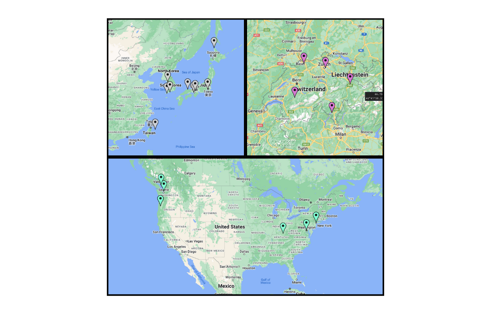
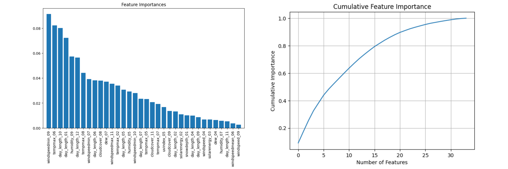
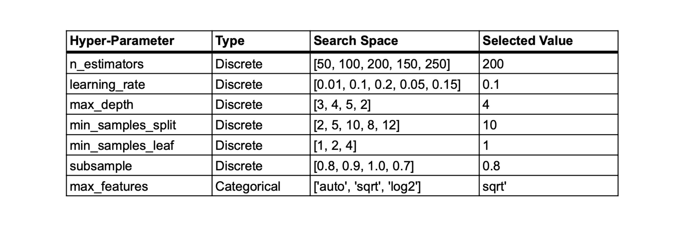

Code
from src import cherry_blossom_utils as util
from src import prediction_utils as pred_util
from datetime import datetime as dt
import warnings
warnings.filterwarnings("ignore")
from src import cherry_blossom_utils as util
from src import prediction_utils as pred_util
from datetime import datetime as dt
import warnings
warnings.filterwarnings("ignore")With cherry blossom trees blooming earlier than ever in the past decade due to climate change, forecasting their peak bloom remains a formidable challenge. The National Parks Service underscores the difficulty of this task, stating that predicting peak bloom is nearly impossible more than 10 days in advance due to the trees’ sensitivity to weather conditions.
Given this inherent challenge, our team set our sights on creating a model that allows us to predict peak bloom in as little as two months in advance. For this task, we utilized over 245 unique features of the previous year’s weather data to predict peak bloom. We successfully trained a Gradient Boosting Regressor (GBR) model which allows us to predict the peak bloom date for any location using only the previous year’s weather data.
Our model was then used to predict the peak bloom dates for: NYC (USA), Washington, D.C., Vancouver (Canada), Kyoto (Japan), and Liestal-Weideli (Switzerland).
The data provided by the event organizers will form the foundation of our training dataset. Some files – like Switzerland and Japan – are already in our ideal format. However, the USA-NPN dataset needs some additional formatting before it is usable.
# Load USA-NPN dataset
usa_npn = pd.read_csv("./data/raw/USA-NPN_status_intensity_observations_data.csv", na_values=[-9999.00])
# Get NYC-specific data
nyc_df = usa_npn[(usa_npn['Site_ID'] == 32789) & (usa_npn['Species_ID'] == 228)]
nyc_df = nyc_df[['Species_ID', 'Site_ID', 'Latitude', 'Longitude', 'Elevation_in_Meters', 'Observation_Date', 'Day_of_Year', 'Phenophase_Status']]
nyc_bloom_df = util.format_df(nyc_df)
nyc_bloom_df = nyc_bloom_df[['location', 'Latitude', 'Longitude', 'Elevation_in_Meters', 'Year', 'Observation_Date', 'Day_of_Year']]
nyc_bloom_df.columns = ['location', 'lat', 'long', 'alt', 'year', 'bloom_date', 'bloom_doy']
# Output the dataframe to CSV
nyc_bloom_df.to_csv("./data/interim/main_locations/validation/nyc.csv", index=False)
# Get USA data
usa_df = usa_npn[(usa_npn['Site_ID'] != 32789) | (usa_npn['Species_ID'] != 228)]
usa_df = usa_df[['Species_ID', 'Site_ID', 'Latitude', 'Longitude', 'Elevation_in_Meters', 'Observation_Date', 'Day_of_Year', 'Phenophase_Status']]
usa_bloom_df = util.format_df(usa_df)
usa_bloom_df = usa_bloom_df[['location', 'Latitude', 'Longitude', 'Elevation_in_Meters', 'Year', 'Observation_Date', 'Day_of_Year']]
usa_bloom_df.columns = ['location', 'lat', 'long', 'alt', 'year', 'bloom_date', 'bloom_doy']
# Output the dataframe to CSV
usa_bloom_df.to_csv("./data/raw/usa_formatted.csv", index=False)In addition to the re-formatting of this file, we also need to isolate the data for NYC which is one of the locations included in the contest submission. Therefore, two dataframes will be created; one for NYC and another for all other locations in the US.
After processing these files, we are left with the following two dataframes:
USA Dataframe
usa_bloom_df.head()| location | lat | long | alt | year | bloom_date | bloom_doy | |
|---|---|---|---|---|---|---|---|
| 0 | 2251 | 45.485600 | -122.855499 | 63 | 2010 | 2010-02-27 | 58 |
| 1 | 1841 | 39.973316 | -82.802826 | 275 | 2010 | 2010-04-04 | 94 |
| 2 | 8861 | 41.713570 | -121.507545 | 1452 | 2013 | 2013-05-08 | 128 |
| 3 | 8861 | 41.713570 | -121.507545 | 1452 | 2014 | 2014-05-01 | 121 |
| 4 | 8861 | 41.713570 | -121.507545 | 1452 | 2015 | 2015-05-20 | 140 |
NYC Dataframe
nyc_bloom_df.head()| location | lat | long | alt | year | bloom_date | bloom_doy | |
|---|---|---|---|---|---|---|---|
| 0 | 32789 | 40.73082 | -73.99733 | 5 | 2019 | 2019-04-08 | 98 |
| 1 | 32789 | 40.73082 | -73.99733 | 5 | 2021 | 2021-04-05 | 95 |
| 2 | 32789 | 40.73082 | -73.99733 | 5 | 2022 | 2022-03-30 | 89 |
| 3 | 32789 | 40.73082 | -73.99733 | 5 | 2023 | 2023-04-02 | 92 |
With the data sucessfully prepared and formatted, we can begin analyzing the data and preparing it for the model.
Amongst the supplied datasets, there were data for numerous locations from all across Asia, Europe, and North America. While it would be ideal to have extensive background data from all locations, given the time constraints of this competition we will instead take a different approach. In order to emulate the geographical diversity of the dataset in as few locations as possible, we will identify so-called “Representative Locations” for which we will acquire extensive historical data.
The Representative Locations are selected using a KMeans clustering algorithm, which clusters all available locations based on their latitude and longitude. Once clustered, we designate the location with the most number of observations as that cluster’s Representative Location. From this, we are able to preserve the geographical diversity of the dataset in as few locations as possible.
For consistency’s sake, we keep a constant k-value of k=5, giving us five Representative Locations for each dataset. We do this to ensure that no one-place is overrepresented in the supplemental data, as the norm would be to dynamically calculate the k-value based on the elbow-curve method.
# For each file, find its representative locations
for location in util.location_dict:
clusters, rep_locations, loc_data = util.get_representative_locations(util.location_dict[location], location)
# Output the cluster data
clusters.to_csv(f"{util.CLUSTERS_FOLDER}{location}_clusters.csv", index=False)
# Output the representative location lists
rep_locations.to_csv(f"{util.LOCATIONS_FOLDER}{location}_representative_locations.csv", index=False)
# Ouput location-specific validation data
for i in range(0, len(loc_data)):
loc_data[i].to_csv(f"{util.VALIDATION_FOLDER}{location}_{i+1}.csv", index=False)Plotting these representative locations on the map below, we can see that they are adequately spread out across the areas of interest.

Disparate sources for historical weather data cause a lot of issues when trying to create a cohesive dataset for multiple locations across multiple jurisdictions. Our search for a single data source brought us to Visual Crossing – a weather data and analytics firm – whose data spans the world-over and has ample coverage for our use-case.
In total, we gathered data for the above-mentioned Representative Locations, as well as the five locations included in the final prediction (NYC, Washington DC, Vancouver, Kyoto, and Liestal).
Data Features
When exploring the data offered by Visual Crossing, we identified the following candidate features as features for our training dataset along with the associated reasons:
Timespan
Some locations, like Kyoto, have extensive historical records while others, like NYC, only have data going back a few years. For this reason, we decided to focus our efforts on collecting as much weather data as possible for the past 20-30 years for each location. As such, our timeframe for these data queries were either 1990-01-01 to 2023-12-31 OR 2000-01-01 to 2023-12-31, depending on the availability of the target features.
This method ensured that we would not run the risk of having less weather data than prediction data, ultimately allowing us to make the best use of the competition datasets.
for index in range(0, len(util.dir_paths)):
# Process the raw data
df_dict = util.process_weather_files(util.dir_paths[index])
# Output the aggregated files
for file_name in df_dict:
df_dict[file_name].to_csv(f"{util.OUTPUT_PATHS[index]}{file_name}", index=False)Data Aggregation
The weather data pulled from Visual Crossing was in daily format, so we had to aggregate the data to get it in the desired format of monthly averages. This process was straightforward and yielded the following results.
It is important to note that the integers next to the variable names represent months (i.e. _01 is January, _02 is February, etc.).
df_dict[file_name].head()| location | year | tempmax_01 | tempmax_02 | tempmax_03 | tempmax_04 | tempmax_05 | tempmax_06 | tempmax_07 | tempmax_08 | ... | day_length_03 | day_length_04 | day_length_05 | day_length_06 | day_length_07 | day_length_08 | day_length_09 | day_length_10 | day_length_11 | day_length_12 | |
|---|---|---|---|---|---|---|---|---|---|---|---|---|---|---|---|---|---|---|---|---|---|
| 0 | 38.8853,-77.0386 | 1990 | 10.967742 | 12.432143 | 15.245161 | 19.246667 | 22.383871 | 28.860000 | 30.751613 | 28.596774 | ... | 43078.612903 | 47639.000000 | 51494.967742 | 53448.133333 | 52488.193548 | 49126.870968 | 44772.666667 | 40234.258065 | 36247.633333 | 34173.451613 |
| 1 | 38.8853,-77.0386 | 1991 | 7.567742 | 10.939286 | 13.719355 | 19.566667 | 27.732258 | 29.806667 | 31.935484 | 31.222581 | ... | 43041.838710 | 47604.233333 | 51469.806452 | 53443.166667 | 52506.096774 | 49158.258065 | 44808.600000 | 40269.387097 | 36274.366667 | 34178.580645 |
| 2 | 38.8853,-77.0386 | 1992 | 7.612903 | 9.441379 | 11.632258 | 17.906667 | 21.729032 | 26.723333 | 30.354839 | 27.400000 | ... | 43157.258065 | 47712.500000 | 51547.354839 | 53456.033333 | 52447.258065 | 49057.806452 | 44695.266667 | 40159.612903 | 36192.466667 | 34164.838710 |
| 3 | 38.8853,-77.0386 | 1993 | 7.838710 | 5.507143 | 9.519355 | 17.830000 | 24.764516 | 29.040000 | 33.035484 | 31.106452 | ... | 43120.290323 | 47677.833333 | 51522.258065 | 53451.500000 | 52465.612903 | 49089.548387 | 44731.466667 | 40195.161290 | 36219.066667 | 34169.645161 |
| 4 | 38.8853,-77.0386 | 1994 | 1.948387 | 6.750000 | 12.145161 | 22.250000 | 22.790323 | 31.390000 | 31.967742 | 28.403226 | ... | 43083.548387 | 47642.833333 | 51497.129032 | 53446.733333 | 52483.967742 | 49121.451613 | 44767.700000 | 40230.290323 | 36245.866667 | 34174.645161 |
After standardizing the format of all our raw data files, we then created a single dataset with all available training examples. During this process, locations whose observations did not occur in the past 30-years were dropped. This occurred in a few cities where the most-recent observations for bloom_doy were from the mid-20th century.
The final dataset contains 267 observations from 21 different locations across the globe.
Missing Values
To address gaps in the data we employed the use of dataset-means to fill in missing values. This allowed us to have a more complete dataset.
Outliers
Our tests indicated that the removal of outliers hurt our model (R2 decreased by ~0.3). As such, we opted to leave them in in favor of a more diverse training dataset.
combined_df = pd.DataFrame()
for index in range(0, len(util.VALIDATION_PATHS)):
# Process the raw data
df_dict = util.combine_files(util.VALIDATION_PATHS[index], util.CLEANED_PATHS[index])
# Output the aggregated files
for file_name in df_dict:
df_dict[file_name].to_csv(f"{util.INDIV_OUT_PATH}{file_name}", index=False)
combined_df = pd.concat([combined_df, df_dict[file_name]], ignore_index=True)
combined_df = combined_df.reset_index(drop=True)
# To handle missing values, use the mean of each feature
combined_df = combined_df.fillna(combined_df.mean(numeric_only=True))
combined_df.to_csv(f"{util.COMBINED_OUT_PATH}combined.csv", index=False)Training Dataset
A random sample of five observations is shown below to demonstrate the format of the training dataset. The columns location and year are purely descriptive and are omitted when training the model. bloom_doy is the value we are predicting.
combined_df.sample(5)| location | year | bloom_doy | lat | long | bloom_date | alt | tempmax_01 | tempmax_02 | tempmax_03 | ... | day_length_03 | day_length_04 | day_length_05 | day_length_06 | day_length_07 | day_length_08 | day_length_09 | day_length_10 | day_length_11 | day_length_12 | |
|---|---|---|---|---|---|---|---|---|---|---|---|---|---|---|---|---|---|---|---|---|---|
| 165 | liestal | 1994 | 82 | 47.481400 | 7.730519 | 1994-03-23 | 350.00 | 7.390323 | 4.314286 | 10.906452 | ... | 42940.000000 | 49129.833333 | 54461.096774 | 57227.833333 | 55852.483871 | 51155.838710 | 45217.666667 | 39066.161290 | 33585.400000 | 30670.774194 |
| 96 | South Korea/Yeosu | 2018 | 91 | 34.739290 | 127.740640 | 2018-04-01 | 64.64 | 6.425806 | 8.789286 | 13.648387 | ... | 43102.129032 | 47241.333333 | 50731.451613 | 52496.166667 | 51642.645161 | 48616.000000 | 44672.100000 | 40554.290323 | 36945.066667 | 35067.225806 |
| 112 | South Korea/Suwon | 2020 | 96 | 37.272260 | 126.985330 | 2020-04-05 | 34.84 | 4.829032 | 6.435714 | 12.667742 | ... | 43008.354839 | 47383.533333 | 51094.903226 | 53005.933333 | 52143.516129 | 48963.774194 | 44804.933333 | 40455.419355 | 36621.333333 | 34589.548387 |
| 81 | Switzerland/Vira / Gambarogno | 2016 | 98 | 46.143428 | 8.841697 | 2016-04-07 | 210.00 | -0.751613 | -0.542857 | 4.635484 | ... | 42885.161290 | 48916.333333 | 54113.129032 | 56830.766667 | 55542.387097 | 51008.806452 | 45238.000000 | 39247.096774 | 33904.600000 | 31037.258065 |
| 226 | kyoto | 2022 | 91 | 35.011983 | 135.676114 | 2022-04-01 | 44.00 | 9.093548 | 12.164286 | 16.725806 | ... | 43121.838710 | 47079.966667 | 50412.548387 | 52093.600000 | 51279.483871 | 48390.677419 | 44620.466667 | 40682.774194 | 37235.700000 | 35446.354839 |
We initially reviewed four candidate models for this prediction task: SVR, Linear Regression, Random Forest Regression, and Gradient Boost Regression.
Following an analysis of each model’s performance, it was decided that we would use a Gradient Boost Regression (GBR) model.
With the candidate model selected, we then moved on to the final two tasks before deploying the model and making our final predictions: feature extraction and HPO.
Feature Extraction
We used Cumulative Feature Importance with a threshold of 0.90 to conduct our feature extraction. This process narrowed our feature space from 240+ features down to the 34 most-important features.
The figure below shows the relative feature importance of the selected features, as well as a cumulative feature importance graph showing their additive importance.

Hyper Parameter Optimization (HPO)
We used the scikit-learn::GridSearchCV to perform our HPO. Our initial configuration space had approximately 18,000 unique combinations and each iteration was evaluated based on its R2 value.
The table below shows our selected hyper-parameter values following this analysis.

Model Performance
After identifying the ideal hyper-parameters and features, we created an optimal version of the GBR model.
This model produced the following MSE and R2 values:
# Load combined data
data = pd.read_csv("./data/cleaned/combined.csv")
# Remove metadata columns
data = data.drop(columns=['location', 'lat', 'long', 'alt', 'year', 'bloom_date'])
# Split features (X) and target variable (y)
X = data.drop(columns=['bloom_doy'])
y = data['bloom_doy']
# Split the data into training and testing sets
X_train, X_test, y_train, y_test = pred_util.train_test_split(X, y, test_size=0.2, random_state=42)
# Subset the data based on the selected features
X_train_scaled = pred_util.scaler.fit_transform(X_train[pred_util.selected_features])
X_test_scaled = pred_util.scaler.transform(X_test[pred_util.selected_features])
# Capture scaling parameters using the X_train dataframe
# Subset it by taking the selected_features
normalization_params = pred_util.compute_normalization_params(X_train[pred_util.selected_features])
# Initialize and train the Gradient Boosting Regressor
model = pred_util.GradientBoostingRegressor(**pred_util.best_params)
model.fit(X_train_scaled, y_train)
# Make predictions and cast from float to integer
y_pred_int = pred_util.get_predictions(X_test_scaled, model)
# Model evaluation (MSE and R2)
pred_util.evaluate_model(y_test, y_pred_int) # THIS PRINTS MSE and R2
# NOTE: THIS MODEL HAS ALREADY BEEN CREATED AND SAVED, SO THAT PART OF THE CODE HAS BEEN
# LEFT OUT. IF YOU ARE INTERESTED IN SEEING THAT PORTION OF THE CODE,
# PLEASE LOOK THROUGH "./notebooks/4-ConstructModel.ipynb".Mean Squared Error: 59.074074074074076
R-squared: 0.8707358436763668Finally, our model was deployed and used to predict the bloom_doy for the final five locations: NYC, Washington DC, Vancouver, Kyoto, and Liestal.
The final predictions (with intervals) are as follows:
# Load new data here
file_path = "./data/inputs/competition_input.csv"
input_df = pd.read_csv(file_path)
input_df = input_df[pred_util.feature_list]
# Normalize data
input_df = pred_util.normalize_new_data(input_df, pred_util.normalization_params)
predictions, lower_bound, upper_bound = pred_util.get_final_predictions(input_df, pred_util.model)
predictions_df = pd.read_csv(file_path)[['location']]
predictions_df["prediction"] = predictions
predictions_df["lower"] = lower_bound
predictions_df["upper"] = upper_bound
predictions_df = predictions_df[['location', 'prediction', 'lower', 'upper']]
# Create an output filename using the current timestamp
output_file_name = f"./data/output/{dt.now().strftime('%Y-%m-%d_%H-%M-%S') + '.csv'}"
# Output the dataframe
predictions_df.to_csv(output_file_name, index=False)
predictions_df| location | prediction | lower | upper | |
|---|---|---|---|---|
| 0 | washingtondc | 81 | 80 | 83 |
| 1 | liestal | 84 | 83 | 86 |
| 2 | kyoto | 95 | 93 | 97 |
| 3 | vancouver | 94 | 92 | 96 |
| 4 | nyc | 88 | 86 | 89 |